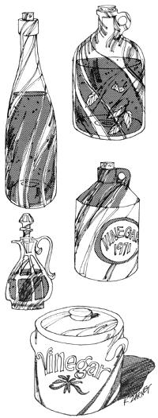

Before you use your entire harvest of grapes, apples and pears for wine, jelly or just plain eating . . . try mashing some for vinegar. With very little time, effort and expense you can have your own delicious, homemade variety on salads every day of the year.
Vinegar seems to be one of those rare foolproof products that anyone can make at home, if the original ingredients are tart enough. We once tried to make our supply of the condiment from apples that apparently were too mild and, even though we let the bottled brew stand for over two years, it never did have any "bite". Mild apples, we found, will produce only a weak flavor that's difficult to recognize as vinegar ... so be sure the fruit you use is good and tart.
The least expensive apples to use for vinegar are those that are bruised or that have dropped from the tree. No matter if they have big, brown spots . . . that's the start of the fermentation you want.
The next cheapest method of obtaining vinegar apples or pears is by going to an orchard right at the end of harvest and ' picking the hard-to-get-at leftovers. Last year we obtained lovely apples this way for only a dollar a bushel.
By the way, although tart apples and pears - or a combination of the two - will certainly make good vinegar, you needn't be restricted to such traditional "cider vinegar" fruits. Our favorite version of the sour liquid seasoning is made from a base of Concord grapes. It's different from and much more flavorful than either store-bought cider or wine vinegar.
Once you have your apples, pears or whatever, pick the fruit over (to make sure it's clean) and chop it up somehow. Grapes are simple - just mash them - but pears and apples present more difficulty. Sure, you can grind them . . . but if you're working with several bushels, that takes a lot of time and energy. My husband, Richard, simply puts the tree fruit in a sturdy wooden container and smashes it with a two-by-four.
Allow the mashed fruit to ferment in a clean crockery, glass or wooden container . . . NEVER metal. Be sure to leave a lot of headroom (25% or so) for expansion and keep an eye on the pulp as it ferments.
The container should be covered during this fermentation with a towel or piece of old sheet - tied on tightly with string - to let in the air needed by the process while keeping the gnats and flies out.
Set the brew in a room - like a basement - with a moderate temperature and let it age for four to six months. Stir and taste the "workings" occasionally and - when the flavor pleases you - strain out the juice and store it in a cool, dark place in glass jugs. If you leave the lids somewhat loose, it'll keep for years.
If the finished product is too weak, strengthen it with some "boughten" as you use it. If the vinegar is too strong, thin it with water as you make salads or whatever.
We use our homemade brew for ALL our salads . . . and we eat a lot of them! One simple dressing that really shows off the flavor of this made-at-home product is a mixture of equal parts vinegar, oil and honey. For dress-up, we add herbs.
I don't can with my vinegar, though, for fear its acidity may not be right (store vinegar has a controlled acid content that always assures uniform results) . . . I'd hate to ruin a batch of pickles or something.
Still and all, homemade vinegar is so delicious and simple to make that we have it on hand at all times here at Fertile Hills Farm. Once you've tried it, chances are you will too . . . it may very well be the simplest and easiest good eating that you can bottle for your shelf of made-on-the-farm foodstuffs.
|
 |
|
|